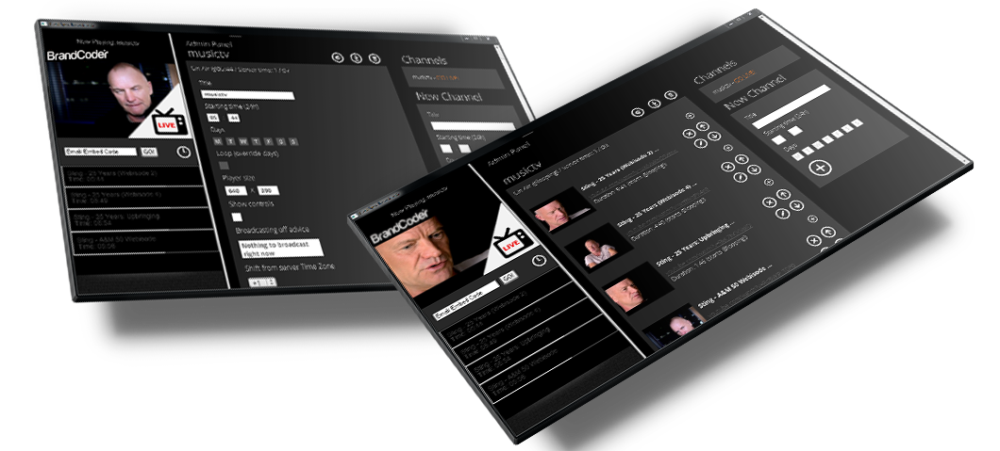
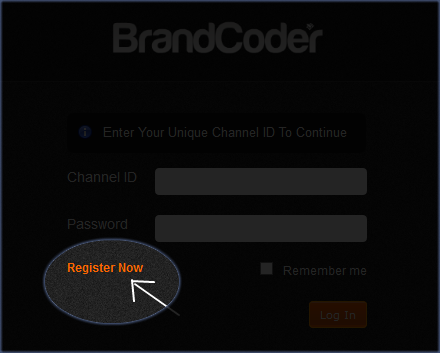
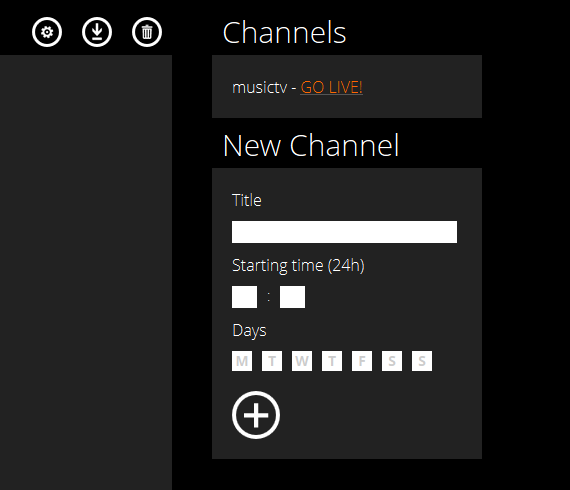
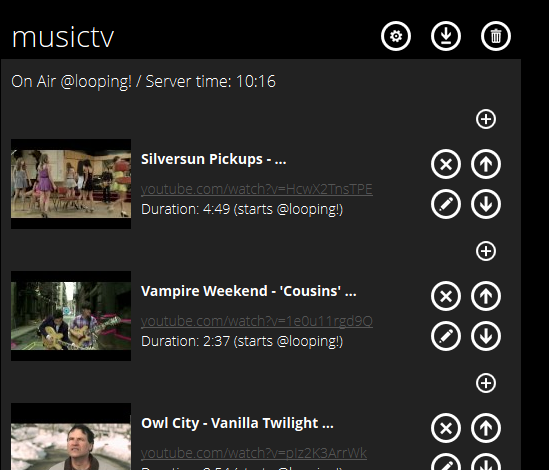
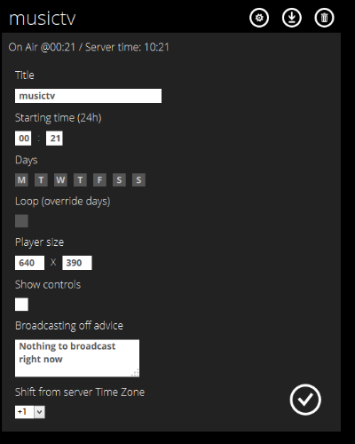
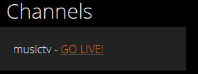
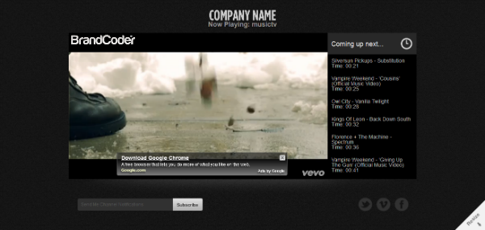

BrandCoder RealTV is an app for iPad, Android Tablets and for the Desktop that enables anyone to create and manage their own Live Internet TV Channels.
The features are simple yet robust. This app makes it possible for people to broadcast live television, just like cable tv, on their websites, facebook pages, connected TVs and more...as from the simple user interface on their mobile device.
The app enables you to create unlimited channels using any YouTube videos you want to broadcast. Choose a starting time and setup the broadcast schedule. When users connect to your webpage, the app automatically loads the right video at the right time, according to your program scheule. User-side, it results in a real Internet TV Experience and you don't have to mess with transcoding videos, uploading files, bandwith costs or any technical hardware setup. All you have to do is download the app to your iPad and gat started!
Main Features:To register a free demo account, you need to enter a valid email address. You will receive an email with your unique Channel ID and password. Use these login credentials to access your channel in the BrandCoder RealTV app and start adding videos to your channel.
The RealTV admin panel is quite simple to use. If it's your first time, after login, you should see three metro-styled boxes. The first one contains the broadcast schedule data, the second is just a channel selector and the third one is a form to add a new channel.
To add a shiny new channel, you've got to fill the form in the third box. Choose a title for your channel (no special characters), a starting time (24h format) and days of the week. Select all days, if you want your channel to play everyday. Press the big "+" button at the end.
The channel title MUST BE unique! This will be the ID you'll use to call your new webtv player into your front end webpage. It's required in order to call any RealTV instance. See the Setup section for details.
You will notice a new channel appeared in the central box. Click on it, to load it's data in the first box.
Just click on the channel's title in the central box, and the data will be loaded in the first box.
After data is loaded on the first box, you should see a list of channel videos. If the channel is new or empty, you should see only a little "+" button in the first box. Clicking on it will show an input field. Insert any YouTube video link on it and save. Data of that video will be shown.
Any video entry in the channel has four buttons to the right. The first "x" button deletes the video entry. Right under, the edit button give you the option to change the video. Arrow buttons changes video position, relative to other videos.
To add a new video, just click on any "+" little button. The video will be added in that position.
Note: You will need to paste the YouTube URL into the channel without using mouse right-click. On your Windows computer press the CTRL button and the "v" key.
At the right top of first box, there are three buttons. The first one loads the channel configuration panel. Here, you can edit all the properties for your channel, such as title, starting time and days. Plus, there are other options:
The "loop" options overrides the days selected. The channel simply will play in loop. Just for curiosity, the virtual starting time, in this case, is the Epoch.
If selected, video controls such as volume, play and pause will be shown.
Here you can modify the size of the video player, to fit your needs.
When there is nothing to broadcast, RealTV will output this message instead of video stream. You can customize it here.
If you change the title of a channel already included in your webpage, REMEMBER to modify also the php callings inside your webpage accordingly! TIP: never modify a channel title.
If your server is located in a place with different timezone, you can specify the shift from that timezone and your local time, so you can set all channels in local time.
In order to fill your channel, you've the option to import any YouTube playlist. Press the second of the three buttons at the right top of channel box, and insert a playlist URL.
Just press the first of the three buttons at the top of the channel top, and it will disappear forever.
Once you've made some modifications to your channel lineup, you can interrupt the broadcast by pushing the "Live Update" button next to your channel name. This will instantly and effectively interrupt the broadcast for any viewer who is currently watching the channel... they do not have to reload the player to view the latest broadcast. This feature enables you to interject programs with ads or breaking news or any other updates in realtime
Each instantce of the BrandCoder RealTV is packaged with a WebTV App. This page includes the player embeded in the page, the broadcast shedule. It also has a newsletter sign-up form so you can capture those leads, in addition to the standard social buttons for you and your viewers to share what they are watching.
You can also include the player in your own web pages. You will receive your own custom embed code along with your Realtv Account along with instructions on how to embed in a webpage.
The mobile to on-screen chat module enables your viewers to scan a QR code on screen and tune-in to the on-screen conversation from a web app on their mobile device. The Multi-Channel Package includes a QR code generator so you can easily create new QR code for each channel. When the user scans the code with their smartphone, they are able to login on the device and start chatting. All messages posted appear layered over top of the player.
The chat uses Gravatar to automatically pull the user gravatar icon using their email address so user icons can appear alongside their messages
You can also include the player in your own web pages. You will receive your own custom embed code along with your Realtv Account along with instructions on how to embed in a webpage.
This software is packaged with an Android application project source code. You can find out more about how to brand and compile your mobile app and how to incude your channels in the app by clicking here: Mobile App Documentation.